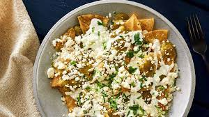

Chilaquiles Verdes
Makes 2 servings.

Description
My absolute favorite breakfast dish, but the amazing thing about chilaquiles is, you can have them for breakfast, lunch, or dinner!
Add an egg! Or don't, regardless this dish is a classic and it can be enjoyed any time of the day!
Ingredients
- 8 corn tortillas
- 6 tomatillos
- 2 jalapenos
- 2 serranos
- 1/4 white onion
- 2 garlic cloves
- 1/2 bunch of cilantro
- Mexican sour cream
- queso fresco
- 1 whole avocado
- 1 tsp oregano
- 1 tsp salt
- 1 tsp pepper
- 1 egg, cooked your way (optional)
Instructions
- Cut the 8 tortillas into squares, making 4 cuts horizontally and vertically. Set aside until needed.
- In a bowl crumble the queso fresco, and set aside.
- To make the salsa verde add the tomatillos and peppers to a medium pot filled with water. Bring to a boil. As soon as the tomatillos change color add them to a blender, (overcooking the tomatillos will make them sour) wait fro the peppers to change color and add them to the blender as well. Add the onion, garlic cloves, cilantro, oregano, salt and pepper to the blender and blend until well incorporated.
- Preheat 1/2 tablespoon of neutral oil in a small pot over medium heat, add the tomatillo sauce and let simmer for about five minutes, or until sauce slightly thickens. Keep warm until needed.
- Heat about 4 to 5 tablespoons of neutral oil in a pan on medium-high heat, add your tortilla squares and pan fry until golden brown and crispy. Drain remaining oil.
- Add your tomatillo sauce to your drained tortilla chips and combine.